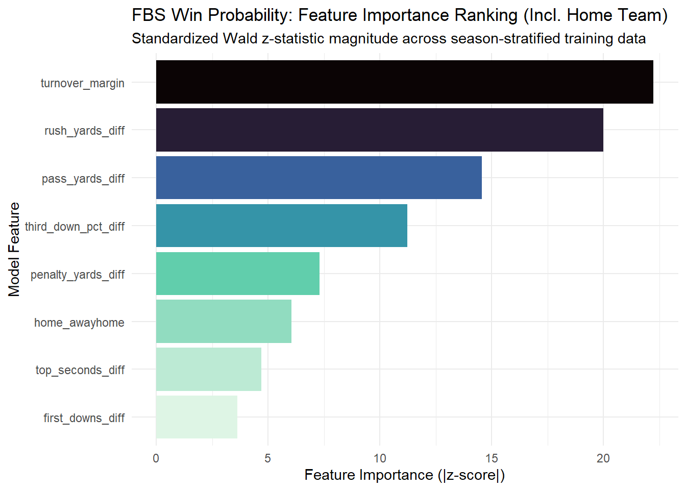
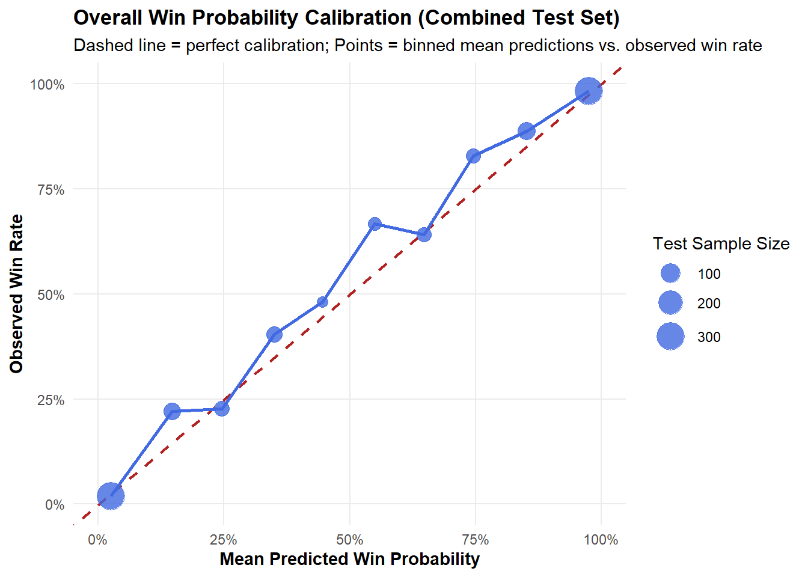
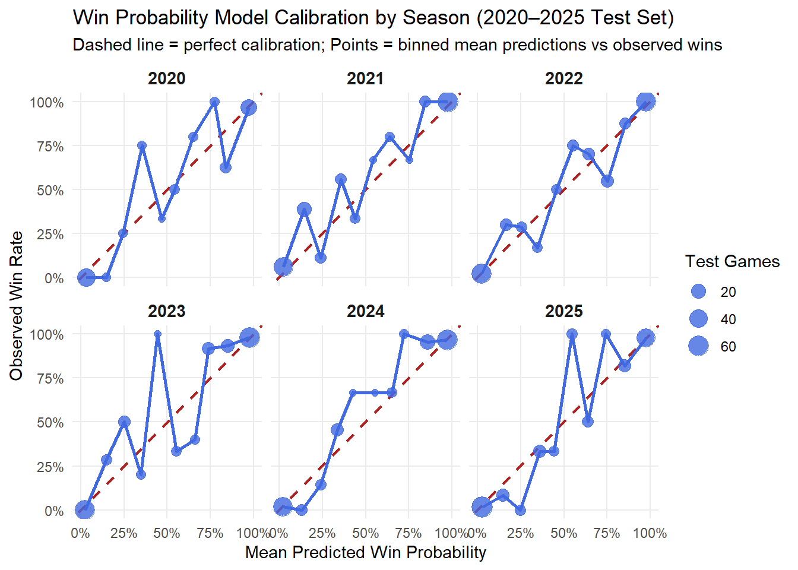
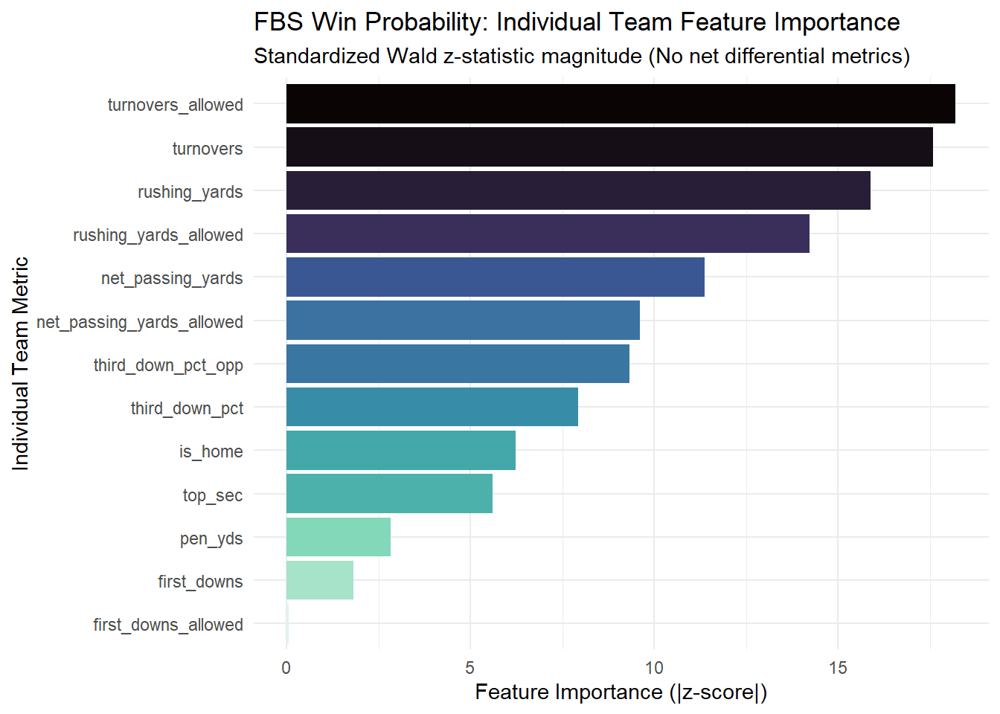
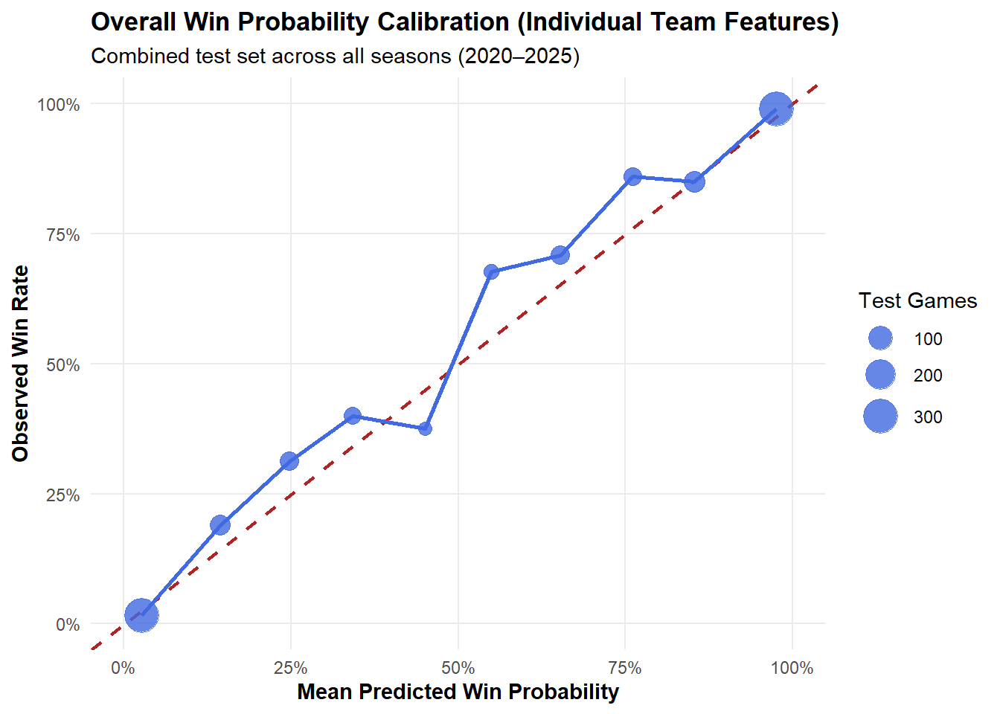
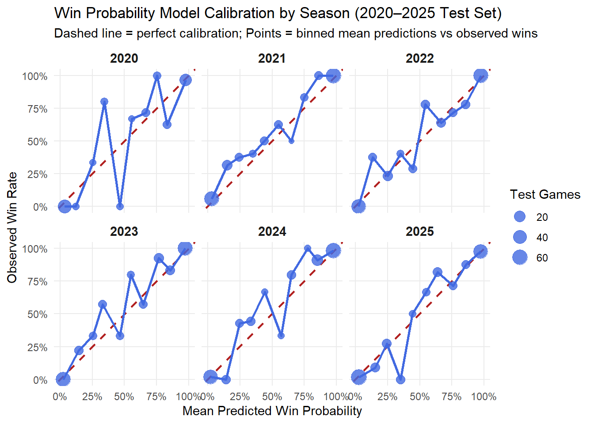

Code
library(cfbfastR)
library(tidyverse)
library(rsample)
library(broom)
library(yardstick)
library(knitr)
library(scales)
library(recipes)This analysis constructs an explanatory classification workflow analyzing FBS vs. FBS college football games from 2020 to 2025. Using real game-level box score statistics sourced via cfbfastR, we model the post-game probability of winning (\(P(\text{Win} = 1)\)) based on game-level performance differentials.
We load the required R packages and pull real post-game team statistics using cfbfastR.
library(cfbfastR)
library(tidyverse)
library(rsample)
library(broom)
library(yardstick)
library(knitr)
library(scales)
library(recipes)Decision: how to structure data?
Each team separately, OR each team as a difference, OR home and away on same line
Below I started by looking at the differences. Note that the argument rows_per_team seems to be misnamed and should be rows_per_game.
seasons <- 2020:2025
weeks <- 1:15
# Container list for weekly box score stats
stats_list <- list()
# Loop through each season and week to collect game team stats
for (yr in seasons) {
for (wk in weeks) {
print(paste0("Attempting week " ,wk, " of ",yr))
stats <- tryCatch({
cfbfastR::cfbd_game_team_stats(
year = yr,
week = wk,
division = "fbs",
rows_per_team = 1
) %>%
mutate(season = as.character(yr), week_num = wk)
}, error = function(e) {
NULL
})
if (!is.null(stats) && nrow(stats) > 0) {
stats_list[[paste(yr, wk, sep = "_")]] <- stats
}
}
}[1] "Attempting week 1 of 2020"
[1] "Attempting week 2 of 2020"
[1] "Attempting week 3 of 2020"
[1] "Attempting week 4 of 2020"
[1] "Attempting week 5 of 2020"
[1] "Attempting week 6 of 2020"
[1] "Attempting week 7 of 2020"
[1] "Attempting week 8 of 2020"
[1] "Attempting week 9 of 2020"
[1] "Attempting week 10 of 2020"
[1] "Attempting week 11 of 2020"
[1] "Attempting week 12 of 2020"
[1] "Attempting week 13 of 2020"
[1] "Attempting week 14 of 2020"
[1] "Attempting week 15 of 2020"
[1] "Attempting week 1 of 2021"
[1] "Attempting week 2 of 2021"
[1] "Attempting week 3 of 2021"
[1] "Attempting week 4 of 2021"
[1] "Attempting week 5 of 2021"
[1] "Attempting week 6 of 2021"
[1] "Attempting week 7 of 2021"
[1] "Attempting week 8 of 2021"
[1] "Attempting week 9 of 2021"
[1] "Attempting week 10 of 2021"
[1] "Attempting week 11 of 2021"
[1] "Attempting week 12 of 2021"
[1] "Attempting week 13 of 2021"
[1] "Attempting week 14 of 2021"
[1] "Attempting week 15 of 2021"
[1] "Attempting week 1 of 2022"
[1] "Attempting week 2 of 2022"
[1] "Attempting week 3 of 2022"
[1] "Attempting week 4 of 2022"
[1] "Attempting week 5 of 2022"
[1] "Attempting week 6 of 2022"
[1] "Attempting week 7 of 2022"
[1] "Attempting week 8 of 2022"
[1] "Attempting week 9 of 2022"
[1] "Attempting week 10 of 2022"
[1] "Attempting week 11 of 2022"
[1] "Attempting week 12 of 2022"
[1] "Attempting week 13 of 2022"
[1] "Attempting week 14 of 2022"
[1] "Attempting week 15 of 2022"
[1] "Attempting week 1 of 2023"
[1] "Attempting week 2 of 2023"
[1] "Attempting week 3 of 2023"
[1] "Attempting week 4 of 2023"
[1] "Attempting week 5 of 2023"
[1] "Attempting week 6 of 2023"
[1] "Attempting week 7 of 2023"
[1] "Attempting week 8 of 2023"
[1] "Attempting week 9 of 2023"
[1] "Attempting week 10 of 2023"
[1] "Attempting week 11 of 2023"
[1] "Attempting week 12 of 2023"
[1] "Attempting week 13 of 2023"
[1] "Attempting week 14 of 2023"
[1] "Attempting week 15 of 2023"
[1] "Attempting week 1 of 2024"
[1] "Attempting week 2 of 2024"
[1] "Attempting week 3 of 2024"
[1] "Attempting week 4 of 2024"
[1] "Attempting week 5 of 2024"
[1] "Attempting week 6 of 2024"
[1] "Attempting week 7 of 2024"
[1] "Attempting week 8 of 2024"
[1] "Attempting week 9 of 2024"
[1] "Attempting week 10 of 2024"
[1] "Attempting week 11 of 2024"
[1] "Attempting week 12 of 2024"
[1] "Attempting week 13 of 2024"
[1] "Attempting week 14 of 2024"
[1] "Attempting week 15 of 2024"
[1] "Attempting week 1 of 2025"
[1] "Attempting week 2 of 2025"
[1] "Attempting week 3 of 2025"
[1] "Attempting week 4 of 2025"
[1] "Attempting week 5 of 2025"
[1] "Attempting week 6 of 2025"
[1] "Attempting week 7 of 2025"
[1] "Attempting week 8 of 2025"
[1] "Attempting week 9 of 2025"
[1] "Attempting week 10 of 2025"
[1] "Attempting week 11 of 2025"
[1] "Attempting week 12 of 2025"
[1] "Attempting week 13 of 2025"
[1] "Attempting week 14 of 2025"
[1] "Attempting week 15 of 2025"raw_team_stats <- bind_rows(stats_list)
glimpse(raw_team_stats)Rows: 9,706
Columns: 80
$ game_id <int> 401239884, 401239884, 401234576, 401234…
$ school <chr> "Stephen F. Austin", "UTEP", "Navy", "B…
$ conference <chr> "Southland", "Conference USA", "America…
$ home_away <chr> "away", "home", "home", "away", "home",…
$ opponent <chr> "UTEP", "Stephen F. Austin", "BYU", "Na…
$ opponent_conference <chr> "Conference USA", "Southland", "FBS Ind…
$ points <int> 14, 24, 3, 55, 42, 0, 31, 57, 35, 45, 0…
$ total_yards <chr> "230", "364", "149", "580", "368", "184…
$ net_passing_yards <chr> "133", "212", "30", "279", "28", "109",…
$ completion_attempts <chr> "14-21", "17-28", "4-8", "16-22", "2-4"…
$ passing_tds <chr> "1", "1", "0", "2", "0", "0", "3", "4",…
$ yards_per_pass <chr> "6.3", "7.6", "3.8", "12.7", "7.0", "4.…
$ passes_intercepted <chr> "1", "1", "1", NA, "2", NA, "1", NA, "1…
$ interception_yards <chr> "0", "0", "9", NA, "43", NA, "0", NA, "…
$ interception_tds <chr> "0", "0", "0", NA, "1", NA, "0", NA, "0…
$ rushing_attempts <chr> "23", "37", "39", "49", "62", "24", "24…
$ rushing_yards <chr> "97", "152", "119", "301", "340", "75",…
$ rush_tds <chr> "1", "2", "0", "5", "5", "0", "1", "4",…
$ yards_per_rush_attempt <chr> "4.2", "4.1", "3.1", "6.1", "5.5", "3.1…
$ first_downs <chr> "14", "19", "7", "28", "24", "13", "28"…
$ third_down_eff <chr> "3-8", "8-13", "2-12", "6-11", "13-15",…
$ fourth_down_eff <chr> "1-1", "1-2", "0-2", "1-2", "1-1", "2-2…
$ punt_returns <chr> NA, NA, "1", "1", NA, NA, "1", "2", "2"…
$ punt_return_yards <chr> NA, NA, "12", "-2", NA, NA, "0", "5", "…
$ punt_return_tds <chr> NA, NA, "0", "0", NA, NA, "0", "0", "0"…
$ kick_return_yards <chr> "39", "19", "20", "38", "15", "82", "63…
$ kick_return_tds <chr> "0", "0", "0", "0", "0", "0", "0", NA, …
$ kick_returns <chr> "3", "2", "1", "2", "1", "5", "5", NA, …
$ kicking_points <chr> "2", "6", "3", "13", "6", NA, "7", "9",…
$ fumbles_recovered <chr> "1", "1", "0", "1", "2", "0", "0", "0",…
$ fumbles_lost <chr> "1", "1", "1", "0", "0", "2", "0", "0",…
$ total_fumbles <chr> NA, NA, NA, NA, NA, NA, NA, NA, NA, NA,…
$ tackles <chr> "38", "25", "33", "32", "31", "38", "41…
$ tackles_for_loss <chr> "5", "5", "4", "8", "6", "2", "1", "5",…
$ sacks <chr> "1", "1", "0", "5", "1", "0", "0", "1",…
$ qb_hurries <chr> "2", "3", "1", "3", "3", "1", "1", "4",…
$ interceptions <chr> "1", "1", "0", "1", "0", "2", "0", "1",…
$ passes_deflected <chr> "3", "0", "1", "2", "2", "1", "4", "2",…
$ turnovers <chr> "2", "2", "1", "1", "0", "4", "0", "1",…
$ defensive_tds <chr> "0", "0", "0", "0", "1", "0", "0", "0",…
$ total_penalties_yards <chr> "5-45", "4-40", "6-54", "1-5", "7-74", …
$ possession_time <chr> "23:13", "36:47", "22:40", "37:20", "35…
$ points_allowed <int> 24, 14, 55, 3, 0, 42, 57, 31, 45, 35, 5…
$ total_yards_allowed <chr> "364", "230", "580", "149", "184", "368…
$ net_passing_yards_allowed <chr> "212", "133", "279", "30", "109", "28",…
$ completion_attempts_allowed <chr> "17-28", "14-21", "16-22", "4-8", "16-2…
$ passing_tds_allowed <chr> "1", "1", "2", "0", "0", "0", "4", "3",…
$ yards_per_pass_allowed <chr> "7.6", "6.3", "12.7", "3.8", "4.5", "7.…
$ passes_intercepted_allowed <chr> "1", "1", NA, "1", NA, "2", NA, "1", "1…
$ interception_yards_allowed <chr> "0", "0", NA, "9", NA, "43", NA, "0", "…
$ interception_tds_allowed <chr> "0", "0", NA, "0", NA, "1", NA, "0", "0…
$ rushing_attempts_allowed <chr> "37", "23", "49", "39", "24", "62", "52…
$ rushing_yards_allowed <chr> "152", "97", "301", "119", "75", "340",…
$ rush_tds_allowed <chr> "2", "1", "5", "0", "0", "5", "4", "1",…
$ yards_per_rush_attempt_allowed <chr> "4.1", "4.2", "6.1", "3.1", "3.1", "5.5…
$ first_downs_allowed <chr> "19", "14", "28", "7", "13", "24", "33"…
$ third_down_eff_allowed <chr> "8-13", "3-8", "6-11", "2-12", "3-9", "…
$ fourth_down_eff_allowed <chr> "1-2", "1-1", "1-2", "0-2", "2-2", "1-1…
$ punt_returns_allowed <chr> NA, NA, "1", "1", NA, NA, "2", "1", "1"…
$ punt_return_yards_allowed <chr> NA, NA, "-2", "12", NA, NA, "5", "0", "…
$ punt_return_tds_allowed <chr> NA, NA, "0", "0", NA, NA, "0", "0", "0"…
$ kick_return_yards_allowed <chr> "19", "39", "38", "20", "82", "15", NA,…
$ kick_return_tds_allowed <chr> "0", "0", "0", "0", "0", "0", NA, "0", …
$ kick_returns_allowed <chr> "2", "3", "2", "1", "5", "1", NA, "5", …
$ kicking_points_allowed <chr> "6", "2", "13", "3", NA, "6", "9", "7",…
$ fumbles_recovered_allowed <chr> "1", "1", "1", "0", "0", "2", "0", "0",…
$ fumbles_lost_allowed <chr> "1", "1", "0", "1", "2", "0", "0", "0",…
$ total_fumbles_allowed <chr> NA, NA, NA, NA, NA, NA, NA, NA, NA, NA,…
$ tackles_allowed <chr> "25", "38", "32", "33", "38", "31", "38…
$ tackles_for_loss_allowed <chr> "5", "5", "8", "4", "2", "6", "5", "1",…
$ sacks_allowed <chr> "1", "1", "5", "0", "0", "1", "1", "0",…
$ qb_hurries_allowed <chr> "3", "2", "3", "1", "1", "3", "4", "1",…
$ interceptions_allowed <chr> "1", "1", "1", "0", "2", "0", "1", "0",…
$ passes_deflected_allowed <chr> "0", "3", "2", "1", "1", "2", "2", "4",…
$ turnovers_allowed <chr> "2", "2", "1", "1", "4", "0", "1", "0",…
$ defensive_tds_allowed <chr> "0", "0", "0", "0", "0", "1", "0", "0",…
$ total_penalties_yards_allowed <chr> "4-40", "5-45", "1-5", "6-54", "5-53", …
$ possession_time_allowed <chr> "36:47", "23:13", "37:20", "22:40", "24…
$ season <chr> "2020", "2020", "2020", "2020", "2020",…
$ week_num <int> 1, 1, 1, 1, 1, 1, 1, 1, 1, 1, 1, 1, 1, …#function to change time into seconds
parse_time_sec <- function(time_str) {
parts <- strsplit(as.character(time_str), ":")[[1]]
if (length(parts) == 2) {
return(as.numeric(parts[1]) * 60 + as.numeric(parts[2]))
}
return(1800)
}
# clear the data
cfb_cleaned <- raw_team_stats %>%
filter(!is.na(points), !is.na(points_allowed), points != points_allowed) %>%
mutate(
win = if_else(as.numeric(points) > as.numeric(points_allowed), 1, 0),
win_factor = factor(win, levels = c(1, 0), labels = c("Win", "Loss")),
season = factor(season)
) %>%
separate(third_down_eff, c("td_comp", "td_att"), sep = "-", convert = TRUE, fill = "right") %>%
separate(third_down_eff_allowed, c("td_comp_opp", "td_att_opp"), sep = "-", convert = TRUE, fill = "right") %>%
separate(total_penalties_yards, c("pen_cnt", "pen_yds"), sep = "-", convert = TRUE, fill = "right") %>%
separate(total_penalties_yards_allowed, c("pen_cnt_opp", "pen_yds_opp"), sep = "-", convert = TRUE, fill = "right") %>%
rowwise() %>%
mutate(
top_sec = parse_time_sec(possession_time),
top_sec_opp = parse_time_sec(possession_time_allowed)
) %>%
ungroup() %>%
mutate(
across(c(total_yards, net_passing_yards, rushing_yards, turnovers,
first_downs, turnovers_allowed, total_yards_allowed,
net_passing_yards_allowed, rushing_yards_allowed, first_downs_allowed,
pen_yds, pen_yds_opp), as.numeric),
third_down_pct = if_else(td_att > 0, td_comp / td_att, 0),
third_down_pct_opp = if_else(td_att_opp > 0, td_comp_opp / td_att_opp, 0),
# Differential Features
turnover_margin = turnovers_allowed - turnovers,
pass_yards_diff = net_passing_yards - net_passing_yards_allowed,
rush_yards_diff = rushing_yards - rushing_yards_allowed,
first_downs_diff = first_downs - first_downs_allowed,
third_down_pct_diff= third_down_pct - third_down_pct_opp,
penalty_yards_diff = pen_yds - pen_yds_opp,
top_seconds_diff = top_sec - top_sec_opp
) %>%
select(game_id, season, week_num, win, win_factor, home_away,turnover_margin, pass_yards_diff,
rush_yards_diff, first_downs_diff, third_down_pct_diff,
penalty_yards_diff, top_seconds_diff) %>%
drop_na()
cfb_cleaned <- cfb_cleaned %>%
slice(which(row_number() %% 2 == 0))
head(cfb_cleaned) %>% kable(digits = 2)| game_id | season | week_num | win | win_factor | home_away | turnover_margin | pass_yards_diff | rush_yards_diff | first_downs_diff | third_down_pct_diff | penalty_yards_diff | top_seconds_diff |
|---|---|---|---|---|---|---|---|---|---|---|---|---|
| 401239884 | 2020 | 1 | 1 | Win | home | 0 | 79 | 55 | 5 | 0.24 | -5 | 814 |
| 401234576 | 2020 | 1 | 1 | Win | away | 0 | 249 | 182 | 21 | 0.38 | -49 | 880 |
| 401235700 | 2020 | 1 | 0 | Loss | away | -4 | 81 | -265 | -11 | -0.53 | -21 | -658 |
| 401207098 | 2020 | 1 | 1 | Win | home | -1 | -119 | 271 | 5 | 0.20 | -30 | -538 |
| 401238035 | 2020 | 1 | 1 | Win | home | 0 | 33 | 133 | 0 | 0.00 | 0 | 0 |
| 401237353 | 2020 | 1 | 1 | Win | home | 1 | 265 | 196 | 27 | 0.45 | -25 | 506 |
set.seed(2026)
game_split <- initial_split(cfb_cleaned, prop = 0.80, strata = season)
train_data <- training(game_split)
test_data <- testing(game_split)
# Train vs. Test proportions by season
season_split_summary <- train_data %>%
count(season, name = "Train_Games") %>%
inner_join(test_data %>% count(season, name = "Test_Games"), by = "season") %>%
mutate(
Total_Games = Train_Games + Test_Games,
Train_Pct = round(Train_Games / Total_Games * 100, 1)
)
kable(season_split_summary, caption = "Season-Stratified Train/Test Split Distribution (2020–2025)")| season | Train_Games | Test_Games | Total_Games | Train_Pct |
|---|---|---|---|---|
| 2020 | 418 | 105 | 523 | 79.9 |
| 2021 | 679 | 170 | 849 | 80.0 |
| 2022 | 682 | 171 | 853 | 80.0 |
| 2023 | 694 | 174 | 868 | 80.0 |
| 2024 | 697 | 175 | 872 | 79.9 |
| 2025 | 709 | 178 | 887 | 79.9 |
predictors <- c("turnover_margin", "pass_yards_diff", "rush_yards_diff",
"first_downs_diff", "third_down_pct_diff",
"penalty_yards_diff", "top_seconds_diff")
# Create recipe to normalize features on the training set
cfb_recipe <- recipe(win ~ ., data = train_data %>% select(win,home_away, all_of(predictors))) %>%
step_normalize(all_of(predictors)) %>%
prep()
# Bake standardized training and test datasets (guarantees identical numeric types)
train_scaled <- bake(cfb_recipe, new_data = NULL)
test_scaled <- bake(cfb_recipe, new_data = test_data)
# Fit Logistic Regression Model
win_model_z <- glm(win ~ ., data = train_scaled, family = binomial(link = "logit"))
# Feature Importance Ranking
feature_importance <- tidy(win_model_z, conf.int = TRUE) %>%
filter(term != "(Intercept)") %>%
mutate(
Predictor = term,
Importance_z = abs(statistic),
Odds_Ratio_1SD = exp(estimate),
OR_Low = exp(conf.low),
OR_High = exp(conf.high)
) %>%
arrange(desc(Importance_z))
kable(
feature_importance %>%
select(Predictor, `Std Beta` = estimate, `Odds Ratio (1 SD)` = Odds_Ratio_1SD, `z-statistic` = statistic, `Importance (|z|)` = Importance_z, `p-value` = p.value),
digits = 3,
caption = "Post-Game Feature Importance Ranked by Standardized |z|-score (with Home Advantage)"
)| Predictor | Std Beta | Odds Ratio (1 SD) | z-statistic | Importance (|z|) | p-value |
|---|---|---|---|---|---|
| turnover_margin | 1.744 | 5.718 | 22.238 | 22.238 | 0 |
| rush_yards_diff | 2.659 | 14.275 | 20.004 | 20.004 | 0 |
| pass_yards_diff | 1.710 | 5.528 | 14.557 | 14.557 | 0 |
| third_down_pct_diff | 0.936 | 2.549 | 11.225 | 11.225 | 0 |
| penalty_yards_diff | -0.455 | 0.634 | -7.310 | 7.310 | 0 |
| home_awayhome | 0.664 | 1.943 | 6.043 | 6.043 | 0 |
| top_seconds_diff | -0.369 | 0.691 | -4.705 | 4.705 | 0 |
| first_downs_diff | -0.521 | 0.594 | -3.618 | 3.618 | 0 |
# Plot Feature Importance
ggplot(feature_importance, aes(x = reorder(Predictor, Importance_z), y = Importance_z, fill = Importance_z)) +
geom_col(show.legend = FALSE) +
coord_flip() +
scale_fill_viridis_c(option = "mako", direction = -1) +
labs(
title = "FBS Win Probability: Feature Importance Ranking (Incl. Home Team)",
subtitle = "Standardized Wald z-statistic magnitude across season-stratified training data",
x = "Model Feature",
y = "Feature Importance (|z-score|)"
) +
theme_minimal()
# Predict probabilities on the prepared test set
test_preds <- test_data %>%
mutate(
pred_prob = predict(win_model_z, newdata = test_scaled, type = "response"),
pred_class = factor(if_else(pred_prob >= 0.5, 1, 0), levels = c("1", "0")),
actual_class = factor(win, levels = c("1", "0"))
)
overall_metrics <- tibble(
Metric = c("Accuracy", "ROC AUC", "Log Loss", "Brier Score"),
`Test Score` = c(
accuracy_vec(test_preds$actual_class, test_preds$pred_class),
roc_auc_vec(test_preds$actual_class, test_preds$pred_prob),
mn_log_loss_vec(test_preds$actual_class, test_preds$pred_prob),
mean((test_preds$win - test_preds$pred_prob)^2)
)
)
kable(overall_metrics, digits = 4, caption = "Out-of-Sample Performance on Stratified Test Data")| Metric | Test Score |
|---|---|
| Accuracy | 0.8911 |
| ROC AUC | 0.9628 |
| Log Loss | 0.2486 |
| Brier Score | 0.0784 |
# Compute binned observed win rates across all test seasons combined
calibration_data_overall <- test_preds %>%
mutate(
prob_bin = cut(pred_prob, breaks = seq(0, 1, by = 0.1), include.lowest = TRUE)
) %>%
group_by(prob_bin) %>%
summarise(
mean_pred = mean(pred_prob),
actual_win_rate = mean(win),
game_count = n(),
.groups = "drop"
) %>%
drop_na()
# Plot aggregate calibration curve
ggplot(calibration_data_overall, aes(x = mean_pred, y = actual_win_rate)) +
geom_abline(slope = 1, intercept = 0, linetype = "dashed", color = "firebrick", linewidth = 0.8) +
geom_line(color = "royalblue", linewidth = 1) +
geom_point(aes(size = game_count), color = "royalblue", alpha = 0.8) +
scale_x_continuous(limits = c(0, 1), labels = percent_format(accuracy = 1)) +
scale_y_continuous(limits = c(0, 1), labels = percent_format(accuracy = 1)) +
scale_size_continuous(range = c(3, 8), labels = comma) +
labs(
title = "Overall Win Probability Calibration (Combined Test Set)",
subtitle = "Dashed line = perfect calibration; Points = binned mean predictions vs. observed win rate",
x = "Mean Predicted Win Probability",
y = "Observed Win Rate",
size = "Test Sample Size"
) +
theme_minimal() +
theme(
panel.grid.minor = element_blank(),
plot.title = element_text(face = "bold", size = 13),
axis.title = element_text(face = "bold")
)
# Compute binned observed win rates per season
calibration_data <- test_preds %>%
mutate(
prob_bin = cut(pred_prob, breaks = seq(0, 1, by = 0.1), include.lowest = TRUE)
) %>%
group_by(season, prob_bin) %>%
summarise(
mean_pred = mean(pred_prob),
actual_win_rate = mean(win),
game_count = n(),
.groups = "drop"
) %>%
drop_na()
# Plot calibration curves faceted by season
ggplot(calibration_data, aes(x = mean_pred, y = actual_win_rate)) +
geom_abline(slope = 1, intercept = 0, linetype = "dashed", color = "firebrick", linewidth = 0.8) +
geom_line(color = "royalblue", linewidth = 1) +
geom_point(aes(size = game_count), color = "royalblue", alpha = 0.8) +
facet_wrap(~ season, ncol = 3) +
scale_x_continuous(limits = c(0, 1), labels = percent_format(accuracy = 1)) +
scale_y_continuous(limits = c(0, 1), labels = percent_format(accuracy = 1)) +
scale_size_continuous(range = c(2, 6)) +
labs(
title = "Win Probability Model Calibration by Season (2020–2025 Test Set)",
subtitle = "Dashed line = perfect calibration; Points = binned mean predictions vs observed wins",
x = "Mean Predicted Win Probability",
y = "Observed Win Rate",
size = "Test Games"
) +
theme_minimal() +
theme(
panel.grid.minor = element_blank(),
strip.text = element_text(face = "bold", size = 11)
)
#seasons <- 2024:2025
#weeks <- 1:15
stats_list <- list()
for (yr in seasons) {
for (wk in weeks) {
print(paste0("Attempting week " ,wk, " of ",yr))
stats <- tryCatch({
cfbfastR::cfbd_game_team_stats(
year = yr,
week = wk,
division = "fbs",
rows_per_team = 2
) %>%
mutate(season = as.character(yr), week_num = wk)
}, error = function(e) {
NULL
})
if (!is.null(stats) && nrow(stats) > 0) {
stats_list[[paste(yr, wk, sep = "_")]] <- stats
}
}
}[1] "Attempting week 1 of 2020"
[1] "Attempting week 2 of 2020"
[1] "Attempting week 3 of 2020"
[1] "Attempting week 4 of 2020"
[1] "Attempting week 5 of 2020"
[1] "Attempting week 6 of 2020"
[1] "Attempting week 7 of 2020"
[1] "Attempting week 8 of 2020"
[1] "Attempting week 9 of 2020"
[1] "Attempting week 10 of 2020"
[1] "Attempting week 11 of 2020"
[1] "Attempting week 12 of 2020"
[1] "Attempting week 13 of 2020"
[1] "Attempting week 14 of 2020"
[1] "Attempting week 15 of 2020"
[1] "Attempting week 1 of 2021"
[1] "Attempting week 2 of 2021"
[1] "Attempting week 3 of 2021"
[1] "Attempting week 4 of 2021"
[1] "Attempting week 5 of 2021"
[1] "Attempting week 6 of 2021"
[1] "Attempting week 7 of 2021"
[1] "Attempting week 8 of 2021"
[1] "Attempting week 9 of 2021"
[1] "Attempting week 10 of 2021"
[1] "Attempting week 11 of 2021"
[1] "Attempting week 12 of 2021"
[1] "Attempting week 13 of 2021"
[1] "Attempting week 14 of 2021"
[1] "Attempting week 15 of 2021"
[1] "Attempting week 1 of 2022"
[1] "Attempting week 2 of 2022"
[1] "Attempting week 3 of 2022"
[1] "Attempting week 4 of 2022"
[1] "Attempting week 5 of 2022"
[1] "Attempting week 6 of 2022"
[1] "Attempting week 7 of 2022"
[1] "Attempting week 8 of 2022"
[1] "Attempting week 9 of 2022"
[1] "Attempting week 10 of 2022"
[1] "Attempting week 11 of 2022"
[1] "Attempting week 12 of 2022"
[1] "Attempting week 13 of 2022"
[1] "Attempting week 14 of 2022"
[1] "Attempting week 15 of 2022"
[1] "Attempting week 1 of 2023"
[1] "Attempting week 2 of 2023"
[1] "Attempting week 3 of 2023"
[1] "Attempting week 4 of 2023"
[1] "Attempting week 5 of 2023"
[1] "Attempting week 6 of 2023"
[1] "Attempting week 7 of 2023"
[1] "Attempting week 8 of 2023"
[1] "Attempting week 9 of 2023"
[1] "Attempting week 10 of 2023"
[1] "Attempting week 11 of 2023"
[1] "Attempting week 12 of 2023"
[1] "Attempting week 13 of 2023"
[1] "Attempting week 14 of 2023"
[1] "Attempting week 15 of 2023"
[1] "Attempting week 1 of 2024"
[1] "Attempting week 2 of 2024"
[1] "Attempting week 3 of 2024"
[1] "Attempting week 4 of 2024"
[1] "Attempting week 5 of 2024"
[1] "Attempting week 6 of 2024"
[1] "Attempting week 7 of 2024"
[1] "Attempting week 8 of 2024"
[1] "Attempting week 9 of 2024"
[1] "Attempting week 10 of 2024"
[1] "Attempting week 11 of 2024"
[1] "Attempting week 12 of 2024"
[1] "Attempting week 13 of 2024"
[1] "Attempting week 14 of 2024"
[1] "Attempting week 15 of 2024"
[1] "Attempting week 1 of 2025"
[1] "Attempting week 2 of 2025"
[1] "Attempting week 3 of 2025"
[1] "Attempting week 4 of 2025"
[1] "Attempting week 5 of 2025"
[1] "Attempting week 6 of 2025"
[1] "Attempting week 7 of 2025"
[1] "Attempting week 8 of 2025"
[1] "Attempting week 9 of 2025"
[1] "Attempting week 10 of 2025"
[1] "Attempting week 11 of 2025"
[1] "Attempting week 12 of 2025"
[1] "Attempting week 13 of 2025"
[1] "Attempting week 14 of 2025"
[1] "Attempting week 15 of 2025"parse_time_sec <- function(time_str) {
parts <- strsplit(as.character(time_str), ":")[[1]]
if (length(parts) == 2) {
return(as.numeric(parts[1]) * 60 + as.numeric(parts[2]))
}
return(1800)
}
cfb_cleaned <- raw_team_stats %>%
filter(!is.na(points), !is.na(points_allowed), points != points_allowed) %>%
mutate(
win = if_else(as.numeric(points) > as.numeric(points_allowed), 1, 0),
win_factor = factor(win, levels = c(1, 0), labels = c("Win", "Loss")),
season = factor(season),
is_home = if_else(str_to_lower(home_away) == "home", 1, 0)
) %>%
separate(third_down_eff, c("td_comp", "td_att"), sep = "-", convert = TRUE, fill = "right") %>%
separate(third_down_eff_allowed, c("td_comp_opp", "td_att_opp"), sep = "-", convert = TRUE, fill = "right") %>%
separate(total_penalties_yards, c("pen_cnt", "pen_yds"), sep = "-", convert = TRUE, fill = "right") %>%
separate(total_penalties_yards_allowed, c("pen_cnt_opp", "pen_yds_opp"), sep = "-", convert = TRUE, fill = "right") %>%
rowwise() %>%
mutate(
top_sec = parse_time_sec(possession_time),
top_sec_opp = parse_time_sec(possession_time_allowed)
) %>%
ungroup() %>%
mutate(
across(c(total_yards, net_passing_yards, rushing_yards, turnovers,
first_downs, turnovers_allowed, total_yards_allowed,
net_passing_yards_allowed, rushing_yards_allowed, first_downs_allowed,
pen_yds, pen_yds_opp), as.numeric),
third_down_pct = if_else(td_att > 0, td_comp / td_att, 0),
third_down_pct_opp = if_else(td_att_opp > 0, td_comp_opp / td_att_opp, 0)
) %>%
select(
game_id, season, week_num, win, win_factor, is_home,
# Individual Team Performance Features
turnovers, turnovers_allowed,
rushing_yards, rushing_yards_allowed,
net_passing_yards, net_passing_yards_allowed,
first_downs, first_downs_allowed,
third_down_pct, third_down_pct_opp,
pen_yds, top_sec
) %>%
drop_na()
cfb_cleaned <- cfb_cleaned %>%
slice(which(row_number() %% 2 == 0))
head(cfb_cleaned) %>% kable(digits = 2)| game_id | season | week_num | win | win_factor | is_home | turnovers | turnovers_allowed | rushing_yards | rushing_yards_allowed | net_passing_yards | net_passing_yards_allowed | first_downs | first_downs_allowed | third_down_pct | third_down_pct_opp | pen_yds | top_sec |
|---|---|---|---|---|---|---|---|---|---|---|---|---|---|---|---|---|---|
| 401239884 | 2020 | 1 | 1 | Win | 1 | 2 | 2 | 152 | 97 | 212 | 133 | 19 | 14 | 0.62 | 0.38 | 40 | 2207 |
| 401234576 | 2020 | 1 | 1 | Win | 0 | 1 | 1 | 301 | 119 | 279 | 30 | 28 | 7 | 0.55 | 0.17 | 5 | 2240 |
| 401235700 | 2020 | 1 | 0 | Loss | 0 | 4 | 0 | 75 | 340 | 109 | 28 | 13 | 24 | 0.33 | 0.87 | 53 | 1471 |
| 401207098 | 2020 | 1 | 1 | Win | 1 | 1 | 0 | 360 | 89 | 361 | 480 | 33 | 28 | 0.65 | 0.44 | 48 | 1363 |
| 401238035 | 2020 | 1 | 1 | Win | 1 | 3 | 3 | 233 | 100 | 226 | 193 | 0 | 0 | 0.00 | 0.00 | 0 | 1800 |
| 401237353 | 2020 | 1 | 1 | Win | 1 | 0 | 1 | 282 | 86 | 345 | 80 | 34 | 7 | 0.70 | 0.25 | 15 | 2043 |
set.seed(2026)
game_split <- initial_split(cfb_cleaned, prop = 0.80, strata = season)
train_data <- training(game_split)
test_data <- testing(game_split)
season_split_summary <- train_data %>%
count(season, name = "Train_Games") %>%
inner_join(test_data %>% count(season, name = "Test_Games"), by = "season") %>%
mutate(
Total_Games = Train_Games + Test_Games,
Train_Pct = round(Train_Games / Total_Games * 100, 1)
)
kable(season_split_summary, caption = "Season-Stratified Train/Test Split Distribution (2020–2025)")| season | Train_Games | Test_Games | Total_Games | Train_Pct |
|---|---|---|---|---|
| 2020 | 418 | 105 | 523 | 79.9 |
| 2021 | 679 | 170 | 849 | 80.0 |
| 2022 | 682 | 171 | 853 | 80.0 |
| 2023 | 694 | 174 | 868 | 80.0 |
| 2024 | 697 | 175 | 872 | 79.9 |
| 2025 | 709 | 178 | 887 | 79.9 |
predictors <- c(
"is_home", "turnovers", "turnovers_allowed",
"rushing_yards", "rushing_yards_allowed",
"net_passing_yards", "net_passing_yards_allowed",
"first_downs", "first_downs_allowed",
"third_down_pct", "third_down_pct_opp",
"pen_yds", "top_sec"
)
# Preprocessing recipe: Normalize numeric features on the training set
cfb_recipe <- recipe(win ~ ., data = train_data %>% select(win, all_of(predictors))) %>%
step_normalize(all_of(predictors)) %>%
prep()
# Prepare normalized train and test sets
train_scaled <- bake(cfb_recipe, new_data = NULL)
test_scaled <- bake(cfb_recipe, new_data = test_data)
# Fit Logistic Regression Model on Individual Features
win_model_z <- glm(win ~ ., data = train_scaled, family = binomial(link = "logit"))
# Feature Importance Ranking
feature_importance <- tidy(win_model_z, conf.int = TRUE) %>%
filter(term != "(Intercept)") %>%
mutate(
Predictor = term,
Importance_z = abs(statistic),
Odds_Ratio_1SD = exp(estimate),
OR_Low = exp(conf.low),
OR_High = exp(conf.high)
) %>%
arrange(desc(Importance_z))
kable(
feature_importance %>%
select(Predictor, `Std Beta` = estimate, `Odds Ratio (1 SD)` = Odds_Ratio_1SD, `z-statistic` = statistic, `Importance (|z|)` = Importance_z, `p-value` = p.value),
digits = 3,
caption = "Individual Team Feature Importance Ranked by Standardized |z|-score"
)| Predictor | Std Beta | Odds Ratio (1 SD) | z-statistic | Importance (|z|) | p-value |
|---|---|---|---|---|---|
| turnovers_allowed | 1.220 | 3.386 | 18.197 | 18.197 | 0.000 |
| turnovers | -1.171 | 0.310 | -17.597 | 17.597 | 0.000 |
| rushing_yards | 1.547 | 4.697 | 15.888 | 15.888 | 0.000 |
| rushing_yards_allowed | -1.402 | 0.246 | -14.226 | 14.226 | 0.000 |
| net_passing_yards | 1.129 | 3.094 | 11.364 | 11.364 | 0.000 |
| net_passing_yards_allowed | -0.972 | 0.378 | -9.604 | 9.604 | 0.000 |
| third_down_pct_opp | -0.682 | 0.506 | -9.334 | 9.334 | 0.000 |
| third_down_pct | 0.565 | 1.759 | 7.938 | 7.938 | 0.000 |
| is_home | 0.339 | 1.404 | 6.226 | 6.226 | 0.000 |
| top_sec | -0.434 | 0.648 | -5.595 | 5.595 | 0.000 |
| pen_yds | -0.164 | 0.849 | -2.824 | 2.824 | 0.005 |
| first_downs | -0.206 | 0.814 | -1.805 | 1.805 | 0.071 |
| first_downs_allowed | -0.007 | 0.993 | -0.056 | 0.056 | 0.956 |
# Feature Importance Visualization
ggplot(feature_importance, aes(x = reorder(Predictor, Importance_z), y = Importance_z, fill = Importance_z)) +
geom_col(show.legend = FALSE) +
coord_flip() +
scale_fill_viridis_c(option = "mako", direction = -1) +
labs(
title = "FBS Win Probability: Individual Team Feature Importance",
subtitle = "Standardized Wald z-statistic magnitude (No net differential metrics)",
x = "Individual Team Metric",
y = "Feature Importance (|z-score|)"
) +
theme_minimal()
Create predictions
test_preds <- test_data %>%
mutate(
pred_prob = predict(win_model_z, newdata = test_scaled, type = "response"),
pred_class = factor(if_else(pred_prob >= 0.5, 1, 0), levels = c("1", "0")),
actual_class = factor(win, levels = c("1", "0"))
)
overall_metrics <- tibble(
Metric = c("Accuracy", "ROC AUC", "Log Loss", "Brier Score"),
`Test Score` = c(
accuracy_vec(test_preds$actual_class, test_preds$pred_class),
roc_auc_vec(test_preds$actual_class, test_preds$pred_prob),
mn_log_loss_vec(test_preds$actual_class, test_preds$pred_prob),
mean((test_preds$win - test_preds$pred_prob)^2)
)
)
kable(overall_metrics, digits = 4, caption = "Out-of-Sample Performance on Individual Team Feature Model")| Metric | Test Score |
|---|---|
| Accuracy | 0.8941 |
| ROC AUC | 0.9624 |
| Log Loss | 0.2507 |
| Brier Score | 0.0790 |
calibration_data_overall <- test_preds %>%
mutate(
prob_bin = cut(pred_prob, breaks = seq(0, 1, by = 0.1), include.lowest = TRUE)
) %>%
group_by(prob_bin) %>%
summarise(
mean_pred = mean(pred_prob),
actual_win_rate = mean(win),
game_count = n(),
.groups = "drop"
) %>%
drop_na()
ggplot(calibration_data_overall, aes(x = mean_pred, y = actual_win_rate)) +
geom_abline(slope = 1, intercept = 0, linetype = "dashed", color = "firebrick", linewidth = 0.8) +
geom_line(color = "royalblue", linewidth = 1) +
geom_point(aes(size = game_count), color = "royalblue", alpha = 0.8) +
scale_x_continuous(limits = c(0, 1), labels = percent_format(accuracy = 1)) +
scale_y_continuous(limits = c(0, 1), labels = percent_format(accuracy = 1)) +
scale_size_continuous(range = c(3, 8), labels = comma) +
labs(
title = "Overall Win Probability Calibration (Individual Team Features)",
subtitle = "Combined test set across all seasons (2020–2025)",
x = "Mean Predicted Win Probability",
y = "Observed Win Rate",
size = "Test Games"
) +
theme_minimal() +
theme(
panel.grid.minor = element_blank(),
plot.title = element_text(face = "bold", size = 13),
axis.title = element_text(face = "bold")
)
# Compute binned observed win rates per season
calibration_data <- test_preds %>%
mutate(
prob_bin = cut(pred_prob, breaks = seq(0, 1, by = 0.1), include.lowest = TRUE)
) %>%
group_by(season, prob_bin) %>%
summarise(
mean_pred = mean(pred_prob),
actual_win_rate = mean(win),
game_count = n(),
.groups = "drop"
) %>%
drop_na()
# Plot calibration curves faceted by season
ggplot(calibration_data, aes(x = mean_pred, y = actual_win_rate)) +
geom_abline(slope = 1, intercept = 0, linetype = "dashed", color = "firebrick", linewidth = 0.8) +
geom_line(color = "royalblue", linewidth = 1) +
geom_point(aes(size = game_count), color = "royalblue", alpha = 0.8) +
facet_wrap(~ season, ncol = 3) +
scale_x_continuous(limits = c(0, 1), labels = percent_format(accuracy = 1)) +
scale_y_continuous(limits = c(0, 1), labels = percent_format(accuracy = 1)) +
scale_size_continuous(range = c(2, 6)) +
labs(
title = "Win Probability Model Calibration by Season (2020–2025 Test Set)",
subtitle = "Dashed line = perfect calibration; Points = binned mean predictions vs observed wins",
x = "Mean Predicted Win Probability",
y = "Observed Win Rate",
size = "Test Games"
) +
theme_minimal() +
theme(
panel.grid.minor = element_blank(),
strip.text = element_text(face = "bold", size = 11)
)